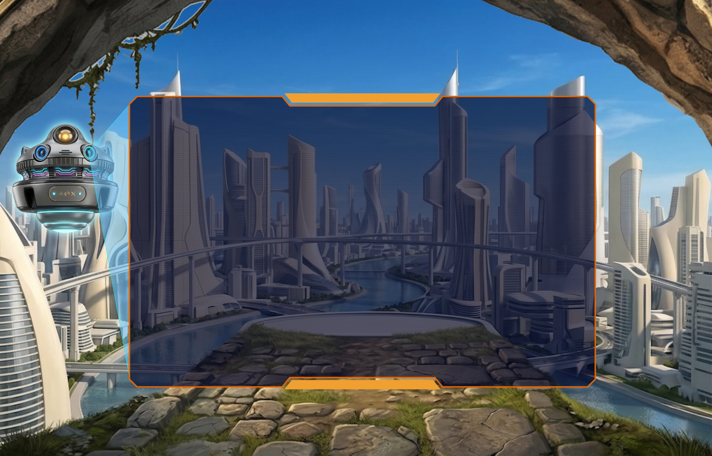
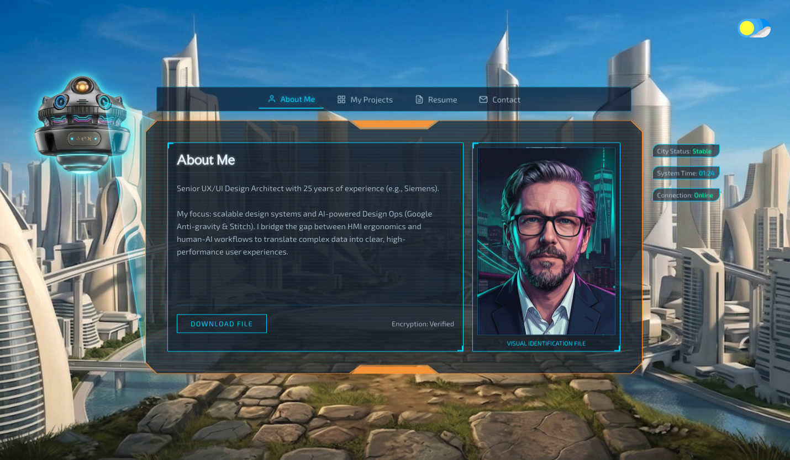
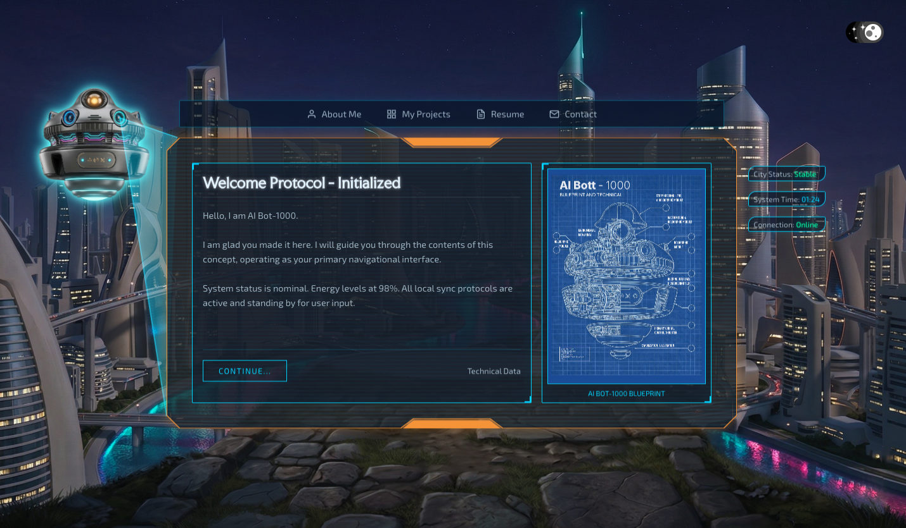
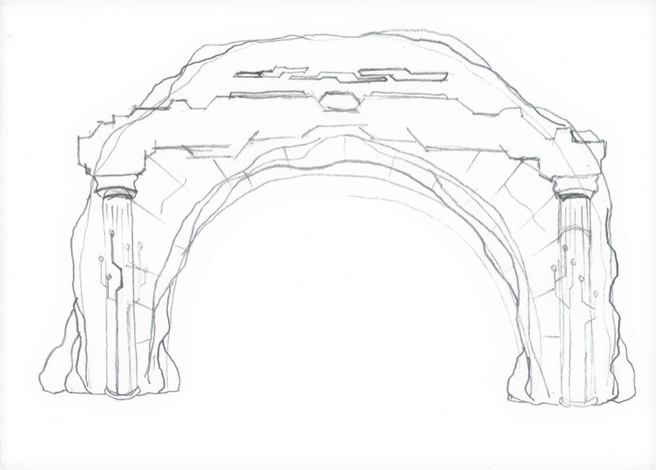
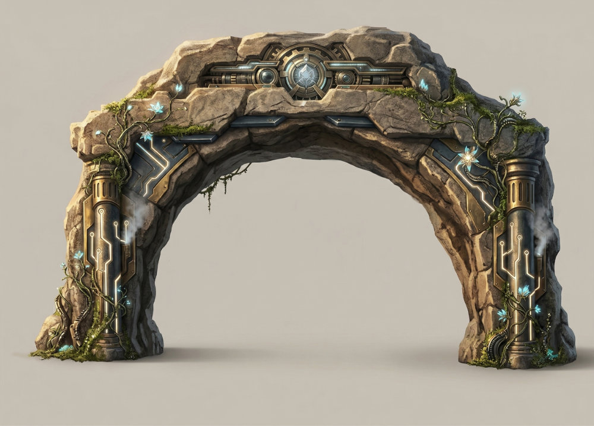
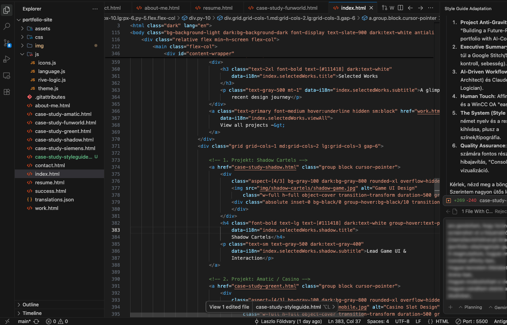

Cinematic Portfolio Experience
Földvary.com Experience
What if a portfolio could feel like a cinematic journey?
A two-day experimental concept exploring how a personal portfolio could move beyond static pages — with a futuristic city, a floating bot narrator, holographic cards, and scroll-driven storytelling.
An Immersive Vision
A standard portfolio is usually built around clear presentation and structured project data. For this experiment, I wanted to explore a different question: what if a portfolio could feel like an experience?
I created an alternate cinematic portfolio concept built around scroll-based storytelling, atmospheric world-building, and interactive narrative elements. The result is a browser-based prototype where the visitor moves through a futuristic environment guided by a floating bot narrator.
The experience combines hardware-accelerated 3D transforms, custom variable typography, cinematic scrolling, and canvas-inspired visual effects to create a more immersive portfolio journey.
Currently in development. Viewing on desktop is recommended for the best cinematic experience.
Key Tech
HTML5, Vanilla CSS, Vanilla JS, Vite, Vercel
Core Challenge
Cinematic Web Experience
Live Prototype:
Experience in Action
Interact with the actual Földvary cinematic scroll directly in your browser. Explore the interface, custom variable typography, day/night atmosphere, and the floating narrative elements as they transition through the experience in real time.
Adaptive Theme:
Day & Night
The experience uses a dynamic Light and Dark theme to show the futuristic city in two very different moods. Day mode feels open and architectural, while night mode creates a stronger cinematic contrast and more atmospheric depth.
A floating AI-assisted bot narrator guides the visitor through the journey, presenting content through holographic cards and creating a more story-driven portfolio flow.


AI-Assisted Creative Build
Co-Creating the Experience
neurology Agents at Work
This project was built as a fast creative experiment using AI-assisted collaboration to explore, design, and implement an ambitious visual concept quickly.
The process started with a rough idea: a cinematic portfolio world with a floating bot narrator and holographic interface cards. I used AI tools to support concept exploration, visual direction, and implementation — while keeping the overall structure, design judgment, and interaction direction under my control.
Within two days, the concept moved from visual idea to a deployable browser prototype on Vercel.



Two days after starting, the concept was already taking shape: cinematic scroll, futuristic city, floating bot narrator, and interactive holographic cards.
Still in development, but already a strong example of how AI-assisted workflows can help turn a visual idea into an interactive web experience quickly — when guided by clear design direction.
Next Steps
What Comes Next?
This is only the beginning of exploring how a portfolio can become a more immersive web experience.
Phase 1
Refining the Narrative
The next step is to expand the bot dialogue, refine the scroll rhythm, and improve the canvas-inspired ribbons for smoother visual feedback during the journey.
- check Bot dialogue expansion
- check Variable typography tuning
- check Canvas ribbon optimization
- check Cross-device responsiveness
- check Advanced sound design
- More case studies as holographic scenes
Phase 2
Expanded Background World
The futuristic city can evolve into a richer background world, where visitors discover hidden content, interact with specific buildings, and experience case studies as part of the environment.
Looking Forward.
This project started with a simple weekend question: what if a web portfolio could feel like a cinematic experience? The challenge was not only generating visuals. It was translating a clear creative direction into layout, motion, interaction, narrative pacing, and deployable front-end structure. AI-assisted tools helped accelerate the process, but the final result still depended on design judgment, sequencing, and knowing how the experience should feel.